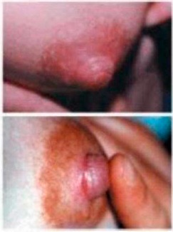
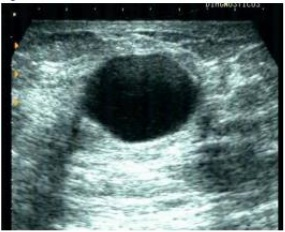
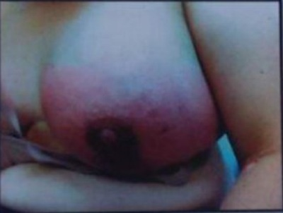
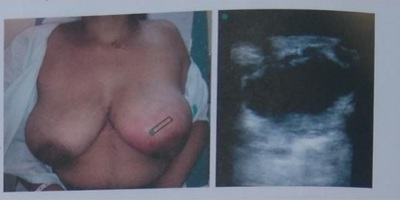
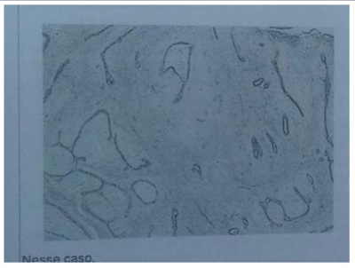
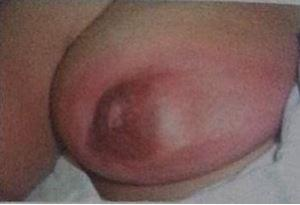
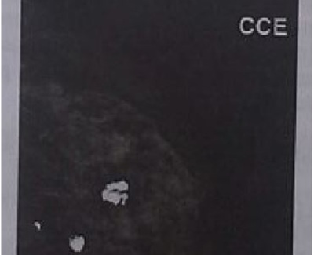

Questão 1 · Cistos mamários · 4000182646Mulher com 43 anos de idade, IV gesta III para e 1 abortamento, refere que no seu auto-exame que faz das mamas durante o banho, observou um “caroço” na mama esquerda. O médico solicitou uma ultrassonogra a que mostrou uma imagem anecoide regular de limites precisos, com reforço posterior, eixo horizontal maior que o sagital. Qual a hipótese mais provável?
A Carcinoma filodes.
B Fibroadenoma.
C Câncer de mama.
D Cisto complexo papilifero.
E Cisto mamário.
Questão 2 · Dor mamária mastalgia · 4000182125Mulher, 27 anos, G1P1, usuária de DIU de cobre, menstruando regularmente. Queixa-se de dor intensa em quadrante supero lateral da mama direita, há 3 meses, com piora importante pré-menstrual e melhora parcial após. Está preocupada com histórico de câncer na família, pois tia avó materna teve câncer de mama aos 68 anos. Exame físico: mamas sem nódulos ou lesões. Cadeias linfonodais sem alterações. Dor à Ultrassonogra a de mamas realizadas há 10 dias: cistos mamários bilaterais, maior diâmetro 0,5 cm, BI RADS:2. Qual a melhor conduta?
A Retorno com ultrassonografia de mamas em 6 meses.
B Solicitar ressonância magnética das mamas.
C Tranquilizar e prescrever anti-inflamatório tópico.
D Teste terapêutico com tamoxifeno 20 mg/dia.
Questão 3 · Tumor Phyllodes · 4000173570Mulher com 65 anos chega ao consultório de ginecologia com queixa de aumento da mama direita. Ao exame, f o i evidenciada uma úlcera na mama direita com dilatação venosa importante. O histopatológico da biópsia revelou comprometimento de tecido epitelial e conjuntivo com cistos que apresentam projeções em forma de folhas no seu interior. O quadro acima é característico do seguinte tumor mamário:
A Fibroadenoma simples.
B Papiloma intraductal.
C Lipomas.
D Hamartomas.
E Tumor
Questão 4 · Descarga papilar · 4000169790Mulher de 50 anos, G1P1, procura o consultório do ginecologista com história de descarga papilar, serosanguinolenta espontânea por um único orifício papilar. No exame da mama esquerda, percebe-se dor à palpação local, evidenciando-se descarga monoductal e presença de tumor. O exame ecográ co revela dilatação ductal e tumor retroareolar. Segundo esses dados, qual o provável diagnóstico?
A Adenomas
B Tumor Phyllodes
C Fibroadenoma
D Papiloma intraductal
Revisar: possível letra faltando em enunciado
Questão 5 · Processos inf lamatórios mastites · 4000166413Diversas doenças podem ser acompanhadas de processo inflamato Mondor, mastite diabética, sarcoidose, mastite acti granulomatosa. Dentre os tipos de mastites crônicas tem-se:
A a mastite actínica, que se caracteriza por ebite super cial autolimitada, benigna, caracterizada por corda doloroso, que acompanha o trajeto venoso cuta
B a doença de Mondor, que é decorrente de radioterapia mama
C a mastite diabética tambe
D a mastite granulomatosa, que é uma in amac
Questão 6 · Desenvolvimento das mamas · 4000165126Paciente com 11 anos de idade com mãe com câncer de mama apresenta lesão nodular retroareolar mama direita com 1,5cm. Qual a melhor conduta?
A Mamografia e punção biopsia.
B Observar e repetir exame clínico em 1 a 2 anos.
C Exerese do nódulo e estudo anatomo patológico.
D Ecografia, mamografia e ressonância magnética.
E Ecografia de mama e punção aspirativa com agulha fina.
Questão 7 · Lesões diversas da mama · Lesões prolif erativas sem atipia · Outras lesões prolif erativas da mama · 4000164698Assinale a alternativa correta quanto às lesões inicialmente benignas de mama.
A Adenomas são neoplasias epiteliais com elementos estromais densos. Possui moderado risco de malignização.
B Hiperplasia estromal pseudoangiomatosa geralmente tem aparência de uma massa mista, bem definida e com calcificações.
C Papiloma intraductal sem atipia consiste em uma matriz de células papilares que crescem da parede do ducto, sempre únicos, com risco de malignização superior a 50%.
D Fibroadenomas simples são tumores sólidos benignos que contêm tecido fibroso e glandular. Não é necessária a extirpação cirúrgic
E Hiperplasia ductal sem atipia é caracterizado por um número aumentado de células no espaço ductal. O risco de evolução para o câncer de mama subsequente é de moderado a alto.
Questão 8 · Exames complementares · Nódulo mamário · 4000164424Mulher de 42 anos de idade refere nódulo de mama esquerda de 2 centímetros há 3 meses. Foi à UBS e o médico tentou fazer uma punção e não veio líquido. A conduta indicada a seguir, dentre as abaixo, é
A indicar mamotomia para retirada do nódulo.
B realizar ultrassonografia de mamas.
C realizar mamografia bilateral.
D indicar quadrantectomia e radioterapia.
Questão 9 · Descarga papilar · 4000164281Mulher, 54 anos, menopausada, tem observado saída de secreção escura (marrom-esverdeada) por vários ductos das papilas mamárias bilateralmente, há cerca de seis meses. Nega qualquer antecedente pessoal ou familiar de doença mamária. Não é tabagista e o exame clínico das mamas é normal, exceto por descarga papilar bilateral, com secreção fluida, escura, por vários ductos. A mamografia recente mostra BIRADS 2. Qual o diagnóstico mais provável?
A Abscesso subareolar.
B Ectasia ductal.
C Papiloma intra-ductal.
D Carcinoma "in situ".
Questão 10 · Lesões diversas da mama · 4000163557“(...) é caracterizada por proliferação anárquica de dúctulos compostos somente por células epiteliais, em meio a tecido adiposo e estroma mamário, sem reação estromal. Esses dúctulos têm contornos arredondados, não apresentam células mioepiteliais, embora exista camada basal, e as células que os revestem são cuboidais, pequenas, sem atipias significativas. A luz apresenta secreção eosinofílica densa. A forma atípica da lesão apresenta atipias citológicas e/ou arquiteturais. No estudo imunoistoquímico, as células epiteliais são negativas para receptores de estrogênio e progesterona, não expressam HER2 e são positivas para proteína S100. (...)" A descrição histológica acima diz respeito à:
A Hiperplasia ductal atípica.
B Atipia epitelial plana.
C Adenose microglandular.
D Esferulose colagênica.
E Hiperplasia sem atipias.
Questão 11 · Dor mamária mastalgia · 4000163471A mastalgia é classificada quanto à origem em verdadeira (proveniente do tecido mamário) ou referida (extra-mamária, geralmente proveniente da parede torácica). A mastalgia verdadeira ainda pode ser subdividida em cíclica e acíclica. Sobre a mastalgia cíclica, é correto afirmar:
A Pode acontecer em mulheres na pós-menopausa.
B Exames de imagem complementares são necessários na ausência de alterações no exame físico.
C A utilização de implantes mamários pode aumentar a incidência de mastalgia cíclica.
D Tamoxifeno pode ser usado em casos refratários a analgésicos e anti-inflamatorios.
E A amenorreia induzida por SIU hormonal evita mastalgia cíclica.
Questão 12 · Fibroadenoma · 4000144680Mulher, 45 anos de idade, eumenorreica, realizou rastreamento que identi cou nódulo mamário suspeito em quadrante superolateral direito. Submeteu-se a exérese completa da lesão e o resultado foi broadenoma complexo. Qual é a conduta adequada?
A Tamoxifeno
B Raloxifeno
C Quadrantectomia
D Seguimento
Questão 13 · Processos inf lamatórios mastites · 4000144265Primípara, 4° dia de puerpério após cesárea por feto pélvico na 36ª de gestação, está no alojamento conjunto. O recém- nascido pesou 2400 gramas, nasceu em boas condições e está com a mãe. Hoje, a paciente reclamou de muita dor mamária. Sem outras queixas. A paciente fez mamoplastia de aumento há dois anos. Exame físico: temperatura 38,0º C (oral), dor, hiperemia leve e aumento de volume em ambas as mamas. Fissuras em complexo aréola mamilar à esquerda (Figura abaixo). Palpação: mamas endurecidas em ambos os quadrantes externos, expressão láctea positiva bilateral. O restante do exame físico está normal. Quais são as melhores condutas para o caso?

A Analgésico e ordenha mamária.
B Clindamicina oral e compressas mornas.
C Cabergolina e enfaixamento mamário.
D Oxacilina endovenosa e compressas frias.
Questão 14 · Dor mamária mastalgia · 4000141634Paciente de 35 anos queixa-se de mastalgia de intensidade moderada, quase todos os meses, antes das menstruações. AP: G0P0. AF: mãe recentemente diagnosticada com câncer de mama aos 61 anos. Exame das mamas: desconforto à palpação dos quadrantes superolaterais bilateralmente. A conduta é
A evitar suporte mamário (sutiã, top).
B prescrever anti-inflamatórios não esteroidais tópicos ou orais.
C iniciar rastreamento anual com mamografia e ressonância magnética das mamas.
D prescrever óleo de prímula e vitamina D, medidas comprovadamente eficazes.
Questão 15 · Outras lesões prolif erativas da mama · 4000141163Mulher, 42a, retorna para resultado de biópsia excisional de nódulo de mama esquerda BI- RADS® 4: broadenoma simples, com achados no parênquima adjacente ao nódulo de hiperplasia estromal pseudo-angiomatosa, metaplasia apócrina e hiperplasia lobular atípica. É CONSIDERADA LESÃO PRECURSORA PARA O DESENVOLVIMENTO DE CÂNCER DE MAMA COM RISCO MODERADO:
A Metaplasia apócrina.
B Hiperplasia lobular atípica.
C Fibroadenoma simples.
D Hiperplasia estromal pseudoangiomatosa.
Questão 16 · Orgãos genitais f emininos · Desenvolvimento das mamas · 4000140709Menina, 9 anos de idade, vem à consulta de rotina. O pai está preocupado pois recentemente notou uma nodulação na mama direita da lha. Relata que avó paterna faleceu de câncer de mama aos 49 anos. Ao exame clínico nota-se uma elevação da aréola e papila a direita, formando uma pequena saliência, com palpação broelástica. Sem alterações do lado esquerdo. Sem outras alterações ao exame clínico. A conduta é:
A Solicitar ultrassonografia de mama.
B Solicitar prolactina, TSH e cortisol.
C Manter conduta expectante.
D Realizar punção aspirativa por agulha fina.
Questão 17 · Mastite lactacional · 4000139839Você é médico da atenção básica à saúde e participará de evento de capacitação do corpo de enfermagem, em sua Unidade de Saúde, sobre prevenção e diagnóstico de mastites. Em reuniões semanais, você compartilha com a equipe informações importantes sobre o tema. A respeito de mastites durante o período do aleitamento, assinale a alternativa correta.
A A mastite pode ocorrer durante todo o período do aleitamento; é mais frequente, porém, na primeira semana pós-parto.
B O diagnóstico de mastite é clínico, podendo ser complementado com exames bacteriológicos e de imagem.
C Durante o pré-natal, os cuidados dispensados com os mamilos devem incluir exposição ao sol e uso de sabonetes e lubrificantes, a fim de evitar infecções mamárias puerperais.
D Quando a ordenha do leite for necessária, deve-se preferir o uso de bombas extratoras, para reduzir o risco de trauma.
E O principal diagnóstico diferencial da mastite é o ingurgitamento mamário, que é unilateral e acompanhado por febre alta.
Questão 18 · Dor mamária mastalgia · 4000131349Sobre a mastalgia, sabe-se que:
A na mastalgia acíclica, a dor é difusa e bilateral, variando ao longo do ciclo menstrual, intensificando na última semana do ciclo e melhorando após a menstruação.
B na mastalgia cíclica, a dor é frequentemente localizada e unilateral, em geral causada por cistos, mastites, traumas e tromboflebite superficial.
C o tratamento inicial na mastalgia acíclica é preferencialmente feito com tamoxifeno por um período de três a cinco dias.
D no tratamento da mastalgia, são importantes as medidas comportamentais como atividade física, dieta pobre em lipídios, diminuição do peso, controle da ansiedade, abolição do tabagismo e outros hábitos são importantes no tratamento da mastalgia.
Questão 19 · Descarga papilar · 4000129860Paciente com 38 anos de idade com lho de 20 anos, apresenta queixas de derrame papilar em mama esquerda e cuja citologia oncótica mostrou-se negativa para malignidade e exames de imagem normal , apenas com presença de hemácias. Qual será a melhor conduta?
A Realizar PET SCAN.
B Indicar ressecção cirúrgica de ductos.
C Repetir imediatamente nova citologia.
D Aguardar seis meses e repetir a citologia.
E Indicar core Biopsy dos ductos principais da mama.
Questão 20 · Cistos mamários · 4000130358Mulher, 52a, G3C3A0, comparece no Centro de Saúde por nódulo indolor em mama esquerda, há três meses. Refere irregularidade menstrual, e fogachos. Mamogra a: BIRADS® 0. Ultrassonogra a mamária: lesão cística em mama esquerda, com conteúdo predominantemente anecoico, sem debris ou áreas sólidas, com reforço acústico posterior, BIRADS® 2. Exame físico: mama esquerda com discreto abaulamento da pele na junção dos quadrantes superiores à inspeção estática; à palpação, identi cada nodulação única, bem delimitada e móvel, aproximadamente 25 mm de diâmetro. Mama direita normal. Expressão das árvores ductais negativas bilateralmente. Axilas e fossas supraclaviculares bilateralmente livres. A CONDUTA É:
A Excisão cirúrgica.
B Acompanhamento ginecológico de rotina anual.
C Estadiamento para câncer de mama.
D Punção aspirativa com agulha fina.
Questão 21 · Tumor Phyllodes · 4000120625Uma paciente de quarenta anos de idade, sem antecedente pessoal ou familiar de neoplasias, refere ter realizado autoexame da mama pela primeira vez há quatro meses, tendo notado pequeno nódulo em mama esquerda, menor que 1 cm. Como não apresentava dor ou qualquer outro sintoma, convenceu-se de que não deveria se preocupar. Há um dia, ao observar-se no espelho, notou abaulamento em mama esquerda. À palpação, sentiu nódulo de cerca de 5 cm no mesmo local em que acreditava ter sentido algo há quatro meses. Nega dor, descarga papilar ou qualquer outra sintomatologia. Ao exame, identi cou-se nódulo ocupando todo o quadrante inferomedial da mama esquerda, medindo cerca de 5 cm, duro, móvel e com contornos regulares. Ausência de linfonodomegalia em cadeias axilares e supraclaviculares. A mamogra a evidenciou nódulo oval medindo 4,6 cm, circunscrito e hiperdenso. Com base nessa situação hipotética, o diagnóstico mais provável e a conduta a ser adotada são, respectivamente,
A fibroadenoma e conduta expectante.
B fibroadenoma e quadrantectomia.
C tumor filoides e conduta expectante.
D tumor filoides e quadrantectomia.
E carcinoma inflamatório e quimioterapia neoadjuvante.
Questão 22 · Descarga papilar · 4000120243Mulher de 45 anos de idade queixa-se de saída de secreção amarelada pelos mamilos. Refere menopausa aos 43 anos e, desde então faz uso de terapia estroprogestativa por adesivos transdérmicos. Ao exame, observa-se saída de secreção espessa e esverdeada, por vários ductos em ambos os mamilos, durante expressão. O diagnóstico mais provável é de:
A adenoma de hipófise.
B carcinoma ductal invasivo.
C ectasia ductal.
D alterações fibrocísticas de mamas.
E carcinoma in situ.
Questão 23 · Descarga papilar · 4000114288Paciente com 37 anos de idade com queixa de saída de secreção avermelhada pelo mamilo esquerdo há 2 meses. Refere que o uxo é espontâneo. Ao exame, as mamas são simétricas, sem abaulamento ou retração e sem nódulos palpáveis. À expressão mamilar notamos um uxo papilar (ver imagem). Foi realizado ultrassonogra a e mamogra a com BIRADS® 1. Qual a conduta mais adequada para a elucidação diagnóstica?

A Coleta de citologia do fluido papilar.
B Biópsia cirúrgica da unidade mamária.
C Realizar ductografia mamária.
D Realizar ressonância magnética.
Questão 24 · Doenças benignas da mama · Quadro clínico · 4000103669A propedêutica clínica é fundamental para o acerto no provável diagnóstico de doenças mamárias. Assinale a alternativa correta em relação a esta propedêutica:
A A mastite com presença de abscesso deve ser tratada com drenagem cirúrgica ou punção com agulha grossa.
B Mulher com 60 anos e queixa de aparecimento de tumor em mama, até se provar o contrário, é portadora de fibroadenoma.
C Exame físico deve ser realizado preferencialmente na fase lútea do ciclo menstrual.
D Fluxo mamário que tem importância clínica é espontâneo, uniductal, bilateral e amarelado.
Questão 25 · Introdução e doenças benignas da mama · 4000084037Em relação às alterações benignas da mama, qual das alternativas abaixo é INCORRETA?
A Cistos complicados apresentam ecos internos à ultrassonografia e, em geral devem ser investigados com punção aspirativa.
B Fibroadenomas são lesões benignas que geralmente se apresentam desde a adolescência.
C Descargas mamilares multiductais de cor esverdeada ou marrom que ocorrem apósexpressão manual devem ser consideradas patológicas e merecem avaliação complementar.
D A galactorreia pode ser induzida pelo uso de medicamentos como: clorpromazina,atenolol e ranitidina.
Questão 26 · Descarga papilar · 4000053122Paciente com 38 anos de idade com lho de 20 anos apresenta queixas de derrame papilar em mama esquerda, cuja citologia oncótica mostrou-se negativa para malignidade, apenas com presença de hemácias, e exames de imagem normais. Qual será a melhor conduta?
A Realizar PET SCAN.
B Indicar ressecção cirúrgica de ductos.
C Repetir imediatamente nova citologia.
D Aguardar 6 meses e repetir a citologia.
E Indicar core Biopsy dos ductos principais da mama.
Questão 27 · Tipos e causas · 4000047148Mulher com 45 anos vai ao consultório de ginecologia com mama direita apresentando proliferação exofítica próxima à papila. Revela que o crescimento foi lento. O aspecto é friável de coloração vinhosa. A descarga papilar é serosanguinolenta, espontânea, unilateral e por um único orifício. Refere dor à palpação. O exame ecográ co demonstra segmento ductal dilatado, padrões hipoecoicos acoplados à parede com crescimento verrocoso. Esse quadro revela o seguinte tipo de tumor mamário:
A Fibroadenoma simples.
B Papiloma intraductal.
C Tumor Phyllodes.
D Hamartomas.
E Lipomas.
Revisar: possível letra faltando em enunciado
Questão 28 · Cistos mamários · 4000033920Paciente com 50 anos, assintomática, com exame físico normal, faz sua primeira mamogra a bilateral que mostra um nódulo de 10 mm em quadrante lateral superior da mama esquerda. Realizou então uma ultrassonogra a mamária que mostrou tratar-se de um cisto de paredes nas e conteúdo anecóico com reforço acústico posterior. Qual a melhor conduta a ser adotada?
A Mamografia e ultrassonografia de controle anual.
B Exérese do nódulo.
C Core biópsia guiada por ultrassonografia.
D Ressonância nuclear magnética.
Questão 29 · Mastite lactacional · Mastite · 4000033159Puérpera de 22 anos, décimo dia de pós-parto cesariana eletiva por apresentação pélvica, procura a UBS com queixa de há dois dias estar apresentando dor intensa na mama direita, di culdade para amamentar e febre. Ao exame físico: aparência cansada, PA 110/60mmHg, FC 110bpm, temperatura axilar 38,5°C. Mama esquerda sem alterações, mama direita dolorosa, com hiperemia e área de edema no quadrante superior externo, sem sinais de utuação. Ausculta respiratória sem alterações. Ausculta cardíaca: bulhas normofonéticas, ritmo cardíaco regular em dois tempos. Assinale a conduta MAIS ADEQUADA.
A Encaminhar para a maternidade de referência para abordagem cirúrgica
B Prescrever ibuprofeno e cefalexina por via oral, e calor local
C Solicitar ultrassonografia das mamas e prescrever antitérmico
D Suspender a amamentação e solicitar ultrassonografia das mamas
Questão 30 · Mastite granulomatosa idiopática · 4000026463São várias as desordens benignas das mamas. Os nódulos mamários compreendem os broadenomas, cistos, lipomas, hamartomas, adenomas, papilomas e tumor loides. Diversas doenças não infecciosas podem ser acompanhadas de processo inflamatório nas mamas, causando mastalgia, destacando-se a doença de Mondor, mastite diabética, sarcoidose, mastite actínica, mastite por lúpus eritematoso disseminado e mastite oleogranulomatosa. Tendo em vista essas desordens benignas,
A a síndrome de Tietze e a doença de Mondor são causas de mastalgia cíclica e são tratadas com estrogênio em doses baixas.
B o fibroadenoma é um tumor benigno da mama com pico de incidência entre 55 e 60 anos.
C o tumor filodes se assemelha ao fibroadenoma, mas é caracterizado por uma menor celularidade do estroma.
D a mastite granulomatosa é uma afecção inflamatória benigna com etiologia incerta, e o tratamento de eleição se faz com prednisona.
Questão 31 · Lesões prolif erativas com atipia · 4000011669Mulher, 60 anos de idade, apresenta nódulo irregular de 8 mm na mama direita identi cado na mamogra a e na ultrassonografia. O resultado da biópsia revelou hiperplasia ductal atípica. Qual é a próxima conduta?
A Ressonância magnética
B Controle com mamografia e ultrassonografia em 6 meses
C Terapia com tamoxifeno
D Exérese da lesão identificada por fio metálico ou radioisótopo
E Terapia com anastrozol
Revisar: possível letra faltando em enunciado
Questão 32 · Descarga papilar · 4000010764Paciente procura mastologista com queixa de descarga papilar. No exame das mamas ca evidente que se trata de uxo benigno porque o mesmo é:
A uniductal bilateral.
B uniductal, unilateral.
C multiductal, unilateral.
D multiductal, bilateral.
Revisar: possível letra faltando em enunciado
Questão 33 · Mastite lactacional · 4000010538Uma puérpera de primeira gestação, ansiosa, no décimo dia de puerpério, comparece ao atendimento referindo dor mamária e febre não aferida. Ao exame físico, a mama direita apresenta-se dolorosa, endurecida, sem sinais ogísticos. A temperatura axilar é de 37,3 graus C. A conduta que não se aplica nesse momento é:
A compressa gelada local.
B antibiótico.
C antiinflamatório via oral.
D esvaziamento mamário.
Questão 34 · Descarga papilar · 4000118517Mulher de 40 anos de idade, nuligesta, queixa-se de saída de secreção esbranquiçada pelos mamilos há 1 mês. Ao exame, não há nódulos palpáveis na mama e a expressão mostra saída de líquido branco de vários ductos, bilateralmente. A mamografia mostra calcificação grosseira no quadrante lateral da mama esquerda. Nesse caso:
A É fundamental a ultrassonografia complementar da mama à procura de lesões suspeitas.
B É indispensável a realização da citologia oncológica do líquido secretado.
C É necessário realizar biópsia cirúrgica da área de calcificação da mama.
D Trata-se de possível papiloma intraductal, devendo-se repetir a mamografia em 6 meses.
E Trata-se de galatorreia, devendo-se pesquisar o uso de psicotrópicos e dosar prolactina.
Questão 35 · Fibroadenoma · 4000114166Um dos tumores mamários mais prevalente é o broadenoma, que geralmente atinge mulheres na faixa etária de 18 a 30 anos. Em relação a este tumor, é correto afirmar que
A seu tratamento é sempre cirúrgico pelo risco de carcinoma em fibroadenoma.
B é contraindicado o uso de anticoncepcionais hormonais combinados nestas pacientes.
C o dispositivo intrauterino com levonorgestrel aumenta em 30% o volume dos fibroadenomas.
D se trata de tumor do tecido conjuntivo mamário e, por isso, é bastante móvel.
E se trata de tumor benigno misto.
Questão 36 · Cistos mamários · 4000112883Paciente de 45 anos apresenta lesão cística da mama. Nesse caso, a biópsia não é necessária quando se observa
A cisto complexo.
B líquido acastanhado na aspiração.
C presença de massa intracística.
D persistência do tumor após aspiração.
E lesão eritematosa em casca de laranja.
Questão 37 · Descarga papilar · 4000105868Mulher de 50 anos de idade queixa-se de saída de secreção esverdeada, pelo mamilo esquerdo, ao realizar autoexame de mama, que apareceu há cerca de 1 mês. É tabagista e teve 2 partos normais, sendo o último há 20 anos. O diagnóstico mais provável é:
A Ectasia ductal.
B Doença de Paget.
C Carcinoma intraductal.
D Abscesso mamário.
E Papiloma intraductal.
Questão 38 · Avaliação diagnóstica · 4000105382Mulher, 45 anos de idade, queixa-se de saída de sangue pelo mamilo. Ao exame observa-se saída de derrame papilar sanguinolento por ducto único à direita. Palpação normal do parênquima mamário e axilar. Qual é o exame mais adequado para a investigação diagnóstica?
A Citologia do derrame.
B Mamografia.
C PET-CT.
D Ressonância magnética.
Questão 39 · Doenças benignas da mama · 4000101324Assinale a afirmativa correta quanto às doenças benignas das mamas:
A O fibroadenoma com 1cm não palpável em paciente jovem tem indicação cirúrgica.
B O agente mais encontrado em mastites é a Klebsiella.
C O cisto complexo com conteúdo sólido é classificado como BIRADS 5.
D O fluxo papilar hemorrágico, espontâneo, uniductal e intermitente tem indicação cirúrgica.
Questão 40 · Introdução e doenças benignas da mama · 4000100363Mulher de 25 anos, assintomática, procura atendimento para exame ginecológico preventivo. Gesta=0, Menarca aos 13 anos. Faz uso de anovulatório oral. Nega antecedentes pessoais e familiais de neoplasias. Não foi observada anormalidade no exame clinico ginecológico e mamário. Foi colhido colpocitologia oncótica. Qual exame está indicado para avaliação de suas mamas
A Mamografia
B Ultrassom
C Mamografia e Ultrassom de mama
D Nenhum exame de imagem
Questão 41 · Dor mamária mastalgia · 4000098071Mulher, 28a, comparece em consulta ginecológica com queixa de dor nas mamas há 15 dias. Refere que a dor tem ritmo catamenial, com piora na segunda fase do ciclo menstrual, e melhora importante na primeira fase. Antecedentes pessoais: Nega trauma, mastite e tabagismo, nunca fez mamogra a e refere uso regular de pílula anticoncepcional oral combinada, hoje no quarto dia de pausa. Antecedentes familiares: negativos para doenças oncológicas. Trabalha como manicure. Exame físico: mamas: médio volume, sem alterações às inspeções estática e dinâmica, palpação dolorosa em quadrantes superiores laterais bilateralmente, ausência de descarga papilar bilateralmente, regiões axilares sem linfonodomegalia, dor ao pinçamento da borda lateral da musculatura peitoral. A CONDUTA É:
A Não solicitar exames complementares.
B Solicitar mamografia.
C Mudar o método anticoncepcional.
D Solicitar ressonância magnética das mamas.
Questão 42 · Mastite lactacional · 4000077503A mastite é uma complicação durante a alimentação com leite materno exclusivo. Qual a conduta mais adequada de tratamento, a ser realizada em casos de mastite infecciosa:
A Iniciar antibioticoterapia sempre desde o início dos sintomas.
B Em casos de dor intensa, suspender amamentação na mama comprometida, ordenhar o leite e oferecer ao lactente sadio.
C O Streptococos pyogenes é o agente etiológico mais comum nesses casos. Iniciar penicilina.
D A oxacilina é a droga de escolha para o tratamento de casos leves.
E O uso de Lactobacillus fermentum não é alternativa eficiente ao uso de antibióticos.
Questão 43 · Tipos e causas · 4000072109Paciente procurou o ambulatório de mastologia com derrame papilar unilateral, espontâneo, sanguinolento em ducto único. Qual a causa mais comum para um derrame papilar com estas carcterísticas?
A Medicação hormonal
B Prolactinoma
C Cancer de mama intra-ductal
D papiloma intra-ductal
E Tumor filóides
Questão 44 · Descarga papilar · 4000070653Na maioria das vezes, a descarga patológica do mamilo é causada por papilomas intraductais benignos. Ao avaliar uma paciente, o médico deve considerar a descarga papilar patológica se esta for:
A Multiductal, após expressão, láctea ou esverdeada.
B Uniductal, após expressão, láctea ou esverdeada.
C Multiductal, espontânea, serosa ou hemorrágica.
D Uniductal, espontânea, serosa ou hemorrágica.
Questão 45 · Descarga papilar · 4000052067Paciente com 38 anos de idade com lho de 20 anos, apresenta queixas de derrame papilar em mama esquerda cuja citologia oncótica mostrou-se negativa para malignidade. Os exames de imagem mostraram-se normais, apenas com presença de hemácias, qual será a melhor conduta?
A Realizar PET SCAN.
B Repetir imediatamente nova citologia.
C Indicar ressecção cirúrgica de ductos.
D Aguardar 6 meses e repetir a citologia.
E Indicar core biopsy dos ductos principais da mama.
Questão 46 · Tipos e causas · 4000049422Mulher de 60 anos chega ao ambulatório de ginecologia com queixa de descarga papilar espontânea. Durante a avaliação, percebe-se que a descarga é uniductal e unilateral, aquosa/serosa. De acordo com o quadro acima, assinale a alternativa que contém o diagnóstico mais provável.
A Hiperprolactinemia
B Câncer mamário
C Mastite não puerperal
D Fibroadenoma
E Hamartoma
Questão 47 · Hamartoma · 4000011653As doenças benignas da mama incluem todas as condições não malignas e classicamente não aumentam o risco para malignidade. Na maioria dos casos, o acompanhamento com exames de imagem é o procedimento mais indicado. Porém, em algumas dessas patologias, deve ser optado para exérese da lesão como, por exemplo, as que possuem um crescimento progressivo não maligno. Diante do exposto, qual das doenças benignas, com base no achado histológico por biópsia, não tem indicação de exérese?
A Lesão esclerosante complexa.
B Papiloma intraductal.
C Cicatriz radiada.
D Tumor filoide.
E Hamartoma.
Questão 48 · Dor mamária mastalgia · 4000123559Mulher de 20 anos, nuligesta, sem doenças conhecidas, refere dor mamária bilateral em ardor e peso, importante, que atrapalha suas atividades cotidianas. Localiza-se principalmente nos quadrantes externos das mamas e que antecede o uxo menstrual. Nega qualquer outra queixa e nega antecedentes familiares de câncer. O exame clínico das mamas apresenta espassamento glandular difuso bilateral. Qual a melhor opção terapêutica para esta paciente?
A Vitamina E
B Bromocriptina
C Progestagênio
D Tamoxifeno
Questão 49 · Fibroadenoma · 4000121771O broadenoma de mama é mais prevalente em mulheres entre 18 e 30 anos e pode ser único ou múltiplo. Em relação a esse tumor mamário, é CORRETO afirmar:
A Trata-se de tumor epitelial e quase sempre é benigno.
B Durante a gravidez costuma diminuir de volume em razão da progesterona.
C Pode ser tratado cirurgicamente, em geral quando palpável e maior que 2 a 3 cm.
D Quando diagnosticado à ultrassonografia, deve-se fazer a core-biopsy, mesmo em situação de BI-RADS II.
E Quando diagnosticado, o uso de anticoncepcional hormonal oral combinado está contraindicado.
Questão 50 · Doenças benignas da mama · 4000117545Uma paciente de 36 anos de idade realizou ultrassonogra a de mamas, identi cando ectasia ductal focal em mama esquerda como achado único. O exame foi realizado devido à queixa de mastalgia antecedendo a menstruação. A paciente nega descarga mamilar. Com base nesse caso hipotético, assinale a alternativa que apresenta a conduta CORRETA:
A Biópsia por agulha grossa.
B Biópsia por agulha fina.
C Acalmar a paciente e fazer acompanhamento anual.
D Controle em três meses.
E Controle em seis meses.
Questão 51 · Doenças benignas da mama · 4000109387Em relação às lesões mamárias, é correto afirmar que
A cistos mamários são lesões frequentes, com características arredondadas, circunscritas e móveis, sendo que o exame ideal para identificá-los é a ultrassonografia.
B os fibroadenomas mamários são tumores sólidos, na maioria das vezes bilaterais e múltiplos, móveis, bem delimitados e, quando pequenos, em qualquer idade, devem permanecer em observação.
C a existência de dor mamária é sintoma importante na prevenção dos casos de câncer mamário, merecendo investigação.
D os casos de alterações funcionais benignas das mamas (AFBMs) são quadros psicossomáticos, sendo que uma terapia psicológica resolve a maioria dos casos.
E a identificação de ectasia ductal é indicativa de exérese dos ductos acometidos, o que melhora sobremaneira os sintomas.
Questão 52 · Dor mamária mastalgia · 4000104342Paciente de 28 anos percebe nódulo no seio e mastalgia. Ao exame físico, seu ginecologista identi ca o nódulo, a rma que provavelmente se trata de uma alteração funcional benigna da mama e solicita ultrassonogra a mamária para confirmação do diagnóstico. A característica ultrassonográfica que é compatível com o diagnóstico clínico consiste em:
A diâmetro anteroposterior maior que o laterolateral
B sombra acústica posterior
C reforço acústico lateral
D conteúdo anecoico
Revisar: possível letra faltando em enunciado
Questão 53 · Cistos mamários · 4000103508Paciente de 35 anos de idade refere aparecimento de nódulo mamário, doloroso, esquerdo, há 1 mês. Neste período, observou pequeno crescimento do nódulo e dor, com necessidade do uso eventual de anti-inflamatório não hormonal. Não tem antecedentes mórbidos, pessoais ou familiares relevantes. No exame clínico, o nódulo está localizado no quadrante superolateral esquerdo, tem 3 cm de diâmetro, é móvel e tem limites regulares. O ultrassom da lesão está mostrado a seguir. Considerando a principal hipótese para o quadro clínico e imagem apresentada, qual é a melhor conduta para o caso?

A Biópsia com agulha grossa.
B Exérese cirúrgica.
C Mamotomia por ultrassom.
D Aspirado com agulha fina.
Questão 54 · Tumor Phyllodes · Fibroadenoma · 4000099821Qual a melhor conduta em paciente jovem (22 anos), que apresenta tumor de mama com crescimento rápido, 4 cm, indolor e consistência fibroelástica?
A biópsia por fragmento com agulha grossa (core-biopsy).
B biópsia à vácuo por mamotomia.
C punção aspirativa com agulha fina.
D tumorectomia sem margens.
Questão 55 · Doenças benignas da mama · 4000099798Quanto as doenças benignas das mamas pode-se afirmar que:
A A conduta no tumor filóides variedade borderline e, com 1 cm é mastectomia simples.
B O fibroadenoma é a doença mamária mais frequente na menopausa.
C O fluxo papilar hemorrágico, espontâneo e unilateral não é indicação de cirurgia.
D O cisto complexo apresenta componente sólido e é classificado como BIRADS 4
Questão 56 · Processos inf lamatórios mastites · 4000098209Puérpera na 3ª semana pós-parto retorna à maternidade referindo prurido, ardor e dor mamilar. Ao exame, observou-se hiperemia e descamação da pele da região areolomamilar. O obstetra solicitou que trouxessem o recém-nascido para exame clínico da cavidade oral. A hipótese diagnóstica realizada pelo obstetra foi infecção por:
A Staphylococcus aureus
B Staphylococcus albus
C Candida albicans
D Streptococcus
Questão 57 · Descarga papilar · 4000071529Entre as características dos derrames papilares, qual não é considerada suspeita de câncer?
A bilateral.
B espontâneo.
C aquoso.
D sanguinolento.
E uniductal.
Questão 58 · Descarga papilar · 4000066419Paciente, 45 anos, refere descarga papilar sanguinolenta, espontânea, pela mama direita. Ao exame, não apresenta linfonodomegalias ou nódulos mamários. Sinal do ponto de gatilho positivo, com saída de secreção serossanguinolenta uniductal na mama esquerda. Nesse caso, a melhor conduta para esclarecimento diagnóstico é:
A Citologia da descarga papilar.
B Ductografia contrastada do ducto acometido.
C Punção aspirativa por agulha fina.
D Core biopsy.
E Excisão cirúrgica do sistema ductal terminal.
Questão 59 · Tipos e causas · Fibroadenoma · Adenoma · 4000018224As doenças das mamas são causas comuns de consulta médica devido ao grande medo do câncer. Analise as patologias de mama abaixo: I- broadenoma; II- adenose; III- papiloma intraductal; IV- eclasia ductal. Qual(is) da(s) seguinte(s) é(são) considerada(s) patologia(s) benigna(s)?
A I apenas.
B I e IV apenas.
C I, II, e IV apenas.
D I, II, III e IV.
Questão 60 · Mastite lactacional · 4000016037O médico de família atende uma paciente de 23 anos que comparece a Unidade de Saúde no quinto dia após parto vaginal para revisão puerperal. O recém-nascido encontra-se em aleitamento materno exclusivo. A paciente queixa-se de di culdade para a amamentação, pois o bebê dorme a maior parte do tempo. Refere mamas dolorosas. Ao exame, o médico observou mamas edemaciadas, com pele brilhante e avermelhada bilateralmente. Não apresentou febre e mal-estar. Qual a conduta correta nesse caso?
A Prescrever antibiótico sistêmico.
B Fazer compressas mornas e evitar sutiã.
C Amamentar frequentemente e analgesia.
D Suspender a amamentação por 24 horas.
Questão 64 · Dor mamária mastalgia · 4000007852Quais das seguintes medicações são eficazes para o tratamento da dor mamária?
A Anti-inflamatório não hormonal; diurético; tamoxifeno.
B Lisurida; piridoxina; isoflavona
C Danazol; gestrinona; análogo de GnRH.
D Ácido gamalinoleico; cabergolina; antibiótico.
E Progestagênio; vitamina E; bromocriptina.
Questão 65 · Lesões prolif erativas com atipia · 4000007827Paciente de 44 anos, eumenorreica, assintomática, realizou mamogra a e ultrassom de mamas que identi caram cistos simples bilaterais menores que 5 mm e calci cações redondas isoladas bilaterais. Exame físico normal. Realizou mamoplastia redutora (cirurgia estética) cujo resultado patológico identi cou, em mama direita, neoplasia lobular in situ grau 3, com a margem cirúrgica lateral coincidente. Dentre as alternativas abaixo, a melhor conduta é:
A Quadrantectomia a direita e radioterapia adjuvante.
B Mastectomia direita com biópsia do linfonodo sentinela.
C Biópsia do linfonodo sentinela e radioterapia adjuvante.
D Tamoxifeno 20 mg/dia por 5 anos.
E Controle clínico e ultrassonográfico anual.
Questão 66 · Avaliação diagnóstica · 4000125042Mulher, 42 anos, em uso de contraceptivo combinado oral, apresenta uxo papilar espontâneo, aquoso, uniductal e apenas em mama esquerda. Exame clínico, ultrassonográfico e mamográfico normal. Qual a conduta correta?
A Exérese do ducto comprometido.
B Se citologia normal, controle mamográfico semestral.
C Orientação e acompanhamento de rotina.
D Punção aspirativa com agulha fina.
E Pesquisa de adenoma hipofisário.
Questão 67 · Processos inf lamatórios mastites · 4000118982Mulher de 45 anos, queixa-se de vermelhidão e dor em região central da mama direita, além de dois episódios de febre não aferida há dois dias. AP: fumante há 30 anos, usa uoxetina há dois anos para depressão. AF: mãe com câncer de mama aos 50 anos. EF: mama direita hiperemiada em quadrante central com aumento de temperatura local, dolorosa à palpação, área central mais amolecida, sem nódulos. A conduta imediata é:
A Mamografia.
B Encaminhar para serviço especializado.
C Antibioticoterapia.
D Biópsia incisional.
Questão 68 · Avaliação diagnóstica · 4000118113Paciente de 29 anos refere descarga papilar espontânea da mama esquerda há 1 mês, sanguinolenta. É tabagista, faz uso de anticoncepcional hormonal oral e nunca engravidou. Sua avó materna teve câncer de mama aos 72 anos. Nega outras queixas. O exame ginecológico e das mamas foi normal. Em relação a essa paciente, é CORRETO afirmar que:
A A principal hipótese diagnóstica é de carcinoma mamário, e a paciente deve realizar ductografia.
B Deve ser realizada biópsia guiada por ultrassonografia, pois aos 29 anos as mamas são densas e a mamografia tem menor sensibilidade.
C A paciente deve ser submetida à ressonância magnética, em razão da idade.
D A citologia do líquido de descarga papilar é o melhor exame para o diagnóstico com altíssima sensibilidade.
E Uma das hipóteses diagnósticas é o papiloma intraductal.
Questão 69 · Mastite lactacional · 4000104119Paciente de 32 anos, procura pronto-atendimento no oitavo dia pós parto vaginal no termo, relatando calafrios, febre e mastalgia esquerda. Paciente refere hipertensão arterial crônica desde os 13 anos de idade e acompanha com nefrologista por doença renal crônica não dialítica. Ao exame clínico bom estado geral, corada, temperatura oral de 38,4°C, FC: 110 BPM, PA 98 x 60 mmHg, abdome indolor a palpação, útero contraído, loquia siológica, toque vaginal; colo grosso, posterior, impérvio. A imagem demonstra a inspeção mamária: Palpação mamária esquerda limitada pela dor, sem identificação de tumoração. Nesse momento, a conduta é:

A Internação, introdução de ampicilina e gentamicina
B Ambulatorial, introdução de cefalexina
C Internação, introdução de clindamicina
D Ambulatorial, introdução de ciprofloxacina
Questão 70 · Dor mamária mastalgia · 4000099291Mulher, 33a, G2P2C0A0, comparece ao pronto atendimento por quadro de dor mamária bilateral, mais intensa há 15 dias. Nega trauma, antecedentes de mastite e tabagismo atual ou pregresso. Trabalha em linha de produção de bijuterias. Refere uso regular e adequado de pílula anticoncepcional oral combinada, hoje no terceiro dia de pausa. Antecedentes pessoais e familiares negativos, inclusive oncológicos. Nunca fez mamogra a. Exame físico: mamas de médio volume, simétricas, dolorosas nos quadrantes superiores, expressão das árvores ductais negativas bilateralmente, sem outras alterações. Axilas e fossas supraclaviculares bilateralmente livres. A hipótese diagnóstica é:
A Mastalgia de origem extramamária com piora catamenial.
B Câncer de mama bilateral nos quadrantes superiores externos.
C Fibroadenomatose mamária.
D Papilomas intraductais bilateralmente com ectasia ductal.
Questão 71 · Mastite lactacional · Situações em que há restrições ao aleitamento materno · 4000098540Paciente de 18 anos procura a emergência na 4ª semana pós-parto referindo febre e dor mamária. O exame físico demonstra mamas ingurgitadas, com área de hiperemia e calor em quadrante superior externo direito. A ultrassonogra a não identifica áreas de abcesso. Com relação à amamentação, deve-se orientar a paciente a:
A Manter em livre demanda em ambas as mamas.
B Utilizar cabergolina, visando a suspensão da amamentação.
C Espaçar as mamadas em relação aos horários de tomada de antibióticos, pois eles passam para o leite.
D Ordenhar e desprezar o leite procedente da mama infectada, devido às modificações na sua composição.
Questão 72 · Mastite lactacional · 4000091557Puérpera, que se encontra no 15º dia pós-parto, veio à consulta por dor mamária e febre. As imagens da inspeção estática e do achado ultrassonográ co da mama ( o retângulo representa o transdutor linear) estão reproduzidas abaixo. Qual o diagnóstico mais provável e qual a conduta correspondente?

A Mastite puerperal - administração de antimicrobiano por via intravenosa por 3 dias.
B Mastite puerperal - administração de antimicrobiano por via oral por 7 dias.
C Galactocele - punção com agulha grossa.
D Abscesso de mama - drenagem, sem uso de antimicrobiano.
E Abscesso de mama - drenagem e administração de antimicrobiano oral por 21 dias.
Revisar: possível letra faltando em enunciado
Questão 73 · Mastite lactacional · 4000079363Paciente de 24 anos, puérpera no 9º dia pós-parto normal, procura o ambulatório de mastologia com dor na mama esquerda durante e após as mamadas, ardência no mamilo e prurido. Os sintomas começaram há 2 dias sem queda do estado geral ou febre. Ao exame, foi observada hiperemia e descamação da pele do complexo areolopapilar. Qual o seu diagnóstico?
A Carcinoma inflamatório.
B Monilíase areolomamilar.
C Fissuras pelo aleitamento.
D Mastite puerperal.
E Doença de Paget da mama.
Questão 74 · Mastite lactacional · 4000073131Durante a consulta de puericultura de um recém-nascido de 25 dias de vida, a mãe da criança apresenta febre, prostração e dor em seios. Ao exame da mãe, a mama direita está hiperemiada e quente, sem outras alterações. As condutas adequadas para esse caso são:
A Antibiótico oral, interrupção do aleitamento pelo seio afetado e extração manual do leite.
B Antibiótico oral, manutenção do aleitamento materno e extração manual do leite, se necessário.
C Anti-inflamatório oral e compressa quente, interrupção do aleitamento pelo seio afetado e extração manual do leite.
D Anti-inflamatório oral e compressa quente, manutenção do aleitamento materno e extração manual do leite, se necessário.
Questão 75 · Cistos mamários · 4000038260Paciente de 38 anos apresentando queixa de nódulo doloroso em mama esquerda surgido há 2 semanas, nega febre, rubor ou calor local. Ao exame físico, nódulo palpável de superfície lisa, móvel e doloroso à palpação. A ultrassonografia de mama solicitada mostrou um cisto de 5 cm de diâmetro. Qual a conduta ideal para essa paciente?
A Exérese do nódulo.
B Punção esvaziadora.
C Core Biopsy.
D Expectante.
Questão 76 · Fibroadenoma · 4000122015Mulher de 20 anos apresenta nódulo na mama esquerda há 12 meses, indolor, sem crescimento nesse período. Exame físico: nódulo de 2 cm de diâmetro no quadrante superior interno da mama esquerda, consistência rme e superfície lisa e móvel. O diagnóstico clínico CORRETO é:
A Hamartoma.
B Cisto.
C Fibroadenoma.
D Tumor filoides.
Questão 77 · Fibroadenoma · 4000114718Um dos tumores de mama mais prevalentes em mulheres entre 18 e 30 anos é o broadenoma. Sobre esse tumor, assinale a alternativa correta.
A É de origem conjuntiva, porém benigno.
B Em jovens, é contraindicado o uso de contraceptivos hormonais combinados.
C A conduta é sempre cirúrgica, pois é considerado como fator de risco para o câncer de mama.
D A presença de carcinoma em seu interior é muito rara e a forma mais comum é o carcinoma lobular in situ.
E Quando presente, deve-se solicitar de rotina a ressonância magnética da mama para diagnóstico diferencial de malignidade.
Questão 78 · Dor mamária mastalgia · 4000104095Paciente de 45 anos com dor mamária e achado súbito de nódulo mama na fase pós menstrual. Assinale o correto:
A O exame físico normal do especialista afasta o diagnóstico de neoplasia maligna.
B Tumor sólido sem sombra acústica ao ultrassom requer controle clínico.
C O achado de cisto simples não complicado ao ultrassom de mama requer controle clínico e imagem caso não haja maior desconforto.
D A presença de dor mamária associada, recomenda o analgésico como tratamento adequado e controle.
Questão 79 · Lesões prolif erativas com atipia · 4000104081Paciente 30 anos vai ao mastologista apresentando exame clínico das mamas normal, com mamogra a BI-RADS 2, por microcalci cações esparsas e alterações sequelares por mamoplastia realizada há 1 ano e ultrassonogra a sem achados de outro serviço (BIRADS 1). Relata achado de anatomopatológico da cirurgia plástica, adenose esclerosante associado a múltiplos focos de hiperplasia lobular atípica, bilateralmente. Paciente deseja orientação contraceptiva. Qual seria a conduta?
A Endoceptivo intrauterino ou DIU de cobre.
B Métodos de barreira ou definitivo, caso prole constituída.
C Contraceptivo oral combinado ou anel vaginal.
D Contraceptivo oral monofásico.
Questão 80 · Lesões prolif erativas sem atipia · 4000097819Mulher, 50a, com queixa de fogachos intensos e desejando tratamento. Sem comorbidades. Antecedente pessoal: menopausa há 12 meses. Nega câncer na família. Mamogra a: área de densidade assimétrica em quadrante súpero-medial da mama direita; ultrassonogra a complementar: foco hipoecogênico de 1,5cm na mesma topogra a, com o laudo conjunto BIRADS® 4A. Realizada biópsia percutânea (core) de 3 fragmentos. Anatomo-patológico: adenose esclerosante, metaplasia apócrina e fibrose. A conduta é:
A Ressecção cirúrgica da área.
B Terapia hormonal.
C Ultrassonografia em 6 meses.
D Tamoxifeno.
Questão 81 · Descarga papilar · 4000095726Assinale a alternativa que completa CORRETAMENTE a frase abaixo. A presença de derrame papilar unilateral, uniductal, espontâneo, aquoso (água de rocha), com mamografia e ecografia normais, indica a necessidade de realizar:
A Biópsia cirúrgica.
B Ductografia.
C Prolactina sérica.
D Conduta expectante.
E Ressonância magnética.
Questão 82 · Doenças benignas da mama · Lesões diversas da mama · Descarga papilar · 4000086815Em relação à ectasia ductal, é INCORRETO afirmar que:
A Afeta ductos de médio e grande calibre.
B É mais frequente entre mulheres jovens, dos 20 aos 30 anos.
C A descarga papilar esverdeada, multiductal e bilateral é um sinal comum.
D Está associada à exposição prolongada ao tabagismo.
E Relaciona-se com a formação de fístulas areolares.
Questão 83 · Tipos e causas · 4000077588Em mulheres que apresentam descarga papilar unilateral, espontânea, sanguinolenta e oriunda de único ducto, o diagnóstico mais frequente é:
A Câncer de mama.
B Papiloma intraductal
C Doença fibrocística mamária
D Abscesso não lactacional.
Questão 84 · Dor mamária mastalgia · 4000067669Os sinais e sintomas das patologias das mamas podem ser in uenciados pela dinâmica funcional destas, em resposta às variações hormonais próprias da mulher no menacme. Em relação à alteração funcional benigna das mamas, é CORRETO afirmar que:
A Está relacionada à funcionalidade do órgão e não reflete doença na mama.
B Mesmo benigna, pode ser definida como fator de risco para câncer de mama.
C Mesmo benigna, transforma-se em fator impeditivo de diagnóstico dos cânceres de mama.
D Pode ser indicativa de maior agressividade do câncer de mama quando associada com a neoplasia maligna da mama.
Questão 85 · Mastite lactacional · 4000059554Lactante no 21º dia de puerpério é atendida com queixa de febre alta (40°C), mal estar e dor nas mamas, após 3 dias de antibioticoterapia. Ao exame físico: identi ca-se a presença de edema pronunciado no sulco submamário, vermelhidão da pele e dor intensa à palpação da mama esquerda, com a sensação de que está utuando. Qual é a principal hipótese diagnóstica?
A Ingurgitamento mamário.
B Fissuras mamária.
C Abscesso areolar.
D Flegmão retromamário.
E Mastite parenquimatosa.
Revisar: possível letra faltando em enunciado
Questão 86 · Fibroadenoma · 4000056067Paciente do sexo feminino, de 40 anos, com nódulo mamário de 3 cm, móvel, broelástico, de bordos bem definidos. Na punção biópsia por agulha na, apresenta blocos celulares planos, com dupla população celular e inúmeras células bipolares soltas. A histologia pode ser observada na figura a seguir (VER IMAGEM). Nesse caso,

A o diagnóstico da paciente é hamartoma mamário, associando-se a clínica, a citologia e a histologia.
B a conclusão diagnóstica requer imuno-histoquímica, utilizando-se p63 e calponina.
C a conclusão definitiva do diagnóstico requer imuno-histoquímica, utilizando-se RE (receptor de estrógeno), RP (receptor de progesterona) e Ki-67.
D o diagnóstico é fibroadenoma, dispensando-se a utilização de marcador imuno- histoquímico para a sua definição.
Questão 87 · Dor mamária mastalgia · 4000048158Julgue o próximo item, com relação aos distúrbios pré-malignos e malignos do trato genital feminino e da mama. Mulheres na menacme que apresentam mastalgia, principalmente no período pré-menstrual, e alterações bróticas no estroma, com formação cística dentro da mama, que variam de acordo com o ciclo menstrual são portadoras de doença brocística da mama. Esta é uma doença benigna e, por consequência, não apresenta risco aumentado de desenvolvimento de câncer de mama.
A Certo.
B Errado.
Questão 88 · Cistos mamários · 4000014767Adolescente, 15 anos, encaminhada ao ginecologista devido a uma ultrassonogra a mamária que revelou a presença de imagem anecoide oval com reforço acústico posterior e paredes ovalares circunscritas medindo, no maior diâmetro, 3 cm. Paciente assintomática com antecedente familiar de câncer de mama (tia paterna). Sobre o caso, assinale a alternativa com a melhor conduta a ser dada:
A Introdução da pílula anticoncepcional combinada para a melhora do cisto.
B Realização de biopsia guiada por ultrassonografia.
C Realização de PAAF.
D Acompanhamento da lesão.
E Realização de biopsia excisional da lesão.
Questão 89 · Mastite lactacional · 4000009516A mastite puerperal infecciosa é uma das principais causas de desmame. Identi que o principal agente etiológico e tratamento adequado.
A Staphylococcus epidermidis; Cefalexina.
B Streptococcus viridans; Amoxicilina com clavulanato.
C Staphylococcus aureus; Cefalexina.
D Streptococcus beta-hemolitico; Amoxicilina com clavulanato.
E Streptococcus agalactiae; Clindamicina.
Questão 91 · Mastite · Processos inf lamatórios mastites · 4000123191Puérpera de 23 anos, amamentando há 6 semanas, veio à consulta por apresentar a mama direita endurecida, dolorosa, com hiperemia difusa, edema e área mais amolecida medialmente ao mamilo (VER IMAGEM). Referiu febre baixa, medida sublingualmente, Os linfonodos axilares estavam palpáveis e dolorosos, não muito aumentados. Diante desse quadro, qual a conduta mais adequada?

A Internação e antibioticoterapia intravenosa.
B Incisão e drenagem.
C Incisão, drenagem e antibioticoterapia por via oral.
D Biópsia de lesão.
E Antibioticoterapia e ordenha da mama.
Questão 92 · Descarga papilar · 4000121869O fluxo papilar funcional é caracterizado por ser:
A Espontâneo, uniductal, bilateral e esverdeado.
B Não espontâneo, multiductal, unilateral e seroso.
C Não espontâneo, multiductal, bilateral e multicolorido.
D Provocado por expressão, uniductal, unilateral e seroso.
E Espontâneo, poliductal, unilateral e translúcido.
Questão 93 · Descarga papilar · 4000107328Paciente 48 anos, G3P2A1, relata que há dois meses tem notado uma secreção mamilar avermelhada espontânea à esquerda. Há 3 anos está em uso de terapia hormonal com estrógenos via oral. Nega outras queixas. O exame físico é completamente normal com exceção da presença de uxo papilar uniductal à expressão, de característica sanguinolenta, em mama esquerda. Exame Complementar: Mamogra a solicitada em Unidade Básica de Saúde e realizada há 15 dias, cuja imagem da incidência crânio caudal da mama esquerda está demonstrada a seguir. Qual é a hipótese diagnóstica mais provável para a causa do derrame papilar e qual a conduta mais adequada para confirmação diagnóstica?

A Câncer de mama. Biópsia percutânea guiada por ultrassonografia.
B Ectasia ductal. Seguimento clínico.
C Fibroadenoma. Exérese cirúrgica da lesão após localização ultrassonográfica.
D Papiloma intraductal. Exérese da unidade mamária.
Questão 94 · Doenças benignas da mama · 4000104984Quanto às doenças da mama, pode-se afirmar:
A Os fluxos papilares secundários a processos neoplásicos habitualmente são poliductais e bilaterais.
B A associação entre tabagismo e mastite periareolar recidivante é frequente.
C O carcinoma invasivo é a principal causa de fluxo papilar.
D O fibroadenoma é neoplasia mamária rara.
Questão 95 · Mastite lactacional · 4000104942O agente microbiano mais comumente associado à mastite puerperal é o (a):
A Staphylococcus epidermidis.
B Enterococcus spp.
C Escherichia coli.
D Staphylococcus aureus.
Questão 96 · Nódulo mamário · 4000098196Mulher, 62 anos, G3P2A1, casada, procura Unidade Básica de Saúde após ter notado um nódulo na mama esquerda. Está em terapia hormonal com estrógeno e progesterona. Refere nunca ter realizado mamogra a. Exame físico: Mama esquerda: nódulo bem delimitado, de 4 cm, móvel e indolor em quadrante superior lateral; Mama direita: normal. Mamogra a: mama esquerda com um nódulo de 2,5 x 3,8 cm, homogêneo, circunscrito em quadrante superior lateral; mama direita sem alterações. A CONDUTA É:
A Trocar a terapia hormonal por Isoflavona e realizar ultrassonografia de mama.
B Trocar a terapia hormonal por Isoflavona e realizar biópsia excisional.
C Suspender a terapia hormonal e realizar ultrassonografia de mama.
D Suspender a terapia hormonal e realizar biópsia excisional.
Questão 97 · Classif icação · 4000069864Paciente de 30 anos apresenta queixa mamária que começa na fase lútea do ciclo menstrual, com ingurgitação mamária, dor, peso e dor à palpação bilateral. Para melhor diagnosticar e tratar essa paciente, deve-se antes classificar esses sintomas em qual dos seguintes tipos de mastalgia?
A Cíclica, anticíclica e extramamária.
B Cíclica, alteração fibrocística e extramamária.
C Cíclica, displasia mamária e intramamária.
D Cíclica, acíclica e extramamária.
E Cíclica, alteração fibrocística e intramamária.
Questão 98 · Tumor Phyllodes · 4000069858Os tumores loides mamários são tumores broepiteliais raros que exibem uma variedade de comportamentos clínicos e patológicos benignos, limítrofes e malignos. O tratamento recomendado é:
A Mastectomia radical sem reconstrução e, após 2 anos livre de tumor, reconstrução com prótese.
B Mastectomia total com preservação do complexo aréolo-mamilar (CAM), se o tumor estiver distante 2 cm do CAM.
C Excisão local com marcação do leito tumoral para monitoramento e radioterapia adjuvante.
D Excisão local ampla, tentando obter uma margem de 1 a 2 cm.
E Mastectomia total, se possível com reconstrução e radioterapia adjuvante.
Questão 99 · Nódulo mamário · 4000043980Paciente de 35 anos apresenta, à ultrassonografia, nódulo mamário cístico no quadrante súpero-lateral da mama direita, com 2 cm de diâmetro. Considerando os achados ultrassonográ cos que indicam benignidade nesse tipo de lesão, assinale entre as alternativas abaixo, a que está ERRADA :
A Cisto com paredes finas.
B Formato redondo regular.
C Realce acústico posterior.
D Pequena imagem intracística.
Revisar: possível letra faltando em enunciado
Questão 100 · Cistos mamários · 4000020774Em relação aos cistos mamários, em qual dos casos a seguir não seria indicado o estudo citológico do fluido intracístico? Respostas: 1 12 23 34 45 56 67 78 89 100
A Paciente de 25 anos, com ecografia demonstrando cistos de conteúdo espesso e hipoecogênico.
B Paciente de 35 anos, com cisto aneicoide, simples, de 2,2 cm.
C Paciente de 28 anos, com mastalgia cíclica e múltiplos microcistos bilaterais à ecografia mamária.
D Paciente de 45 anos, com fluido sanguinolento revelado pelo PAAF.